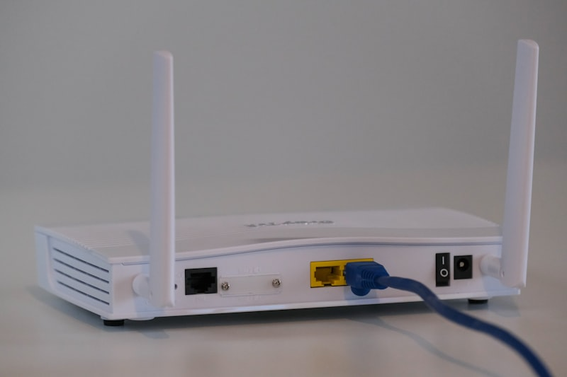

Mesh WiFi Buyer's Guide
Everything you actually need to know before buying a mesh WiFi system, without the networking jargon overload.
In This Guide
Mesh WiFi gets marketed like magic: put a few little white boxes around your house and suddenly every dead zone disappears. The truth is slightly less glamorous but still pretty good. A good mesh system absolutely can fix weak coverage, but only if you buy the right kind of system for your home and place it correctly.
This guide is for normal people who want good WiFi without turning into amateur network engineers. If you just want the short version, here it is: buy a dual-band system for smaller homes and lower budgets, buy tri-band for bigger homes or heavier use, and do not obsess over maximum theoretical speeds. Coverage and consistency matter more.

What Mesh WiFi Actually Is
A mesh WiFi system is a group of routers that work together as one network. Instead of one router in the corner of the house trying to blast signal everywhere, you place multiple nodes around the home. Your phone, laptop, TV, and everything else connect to the nearest node, and the system handles the rest.
The big advantage over old-school WiFi extenders is that a mesh system uses one network name and intelligently moves devices between nodes. You are not manually switching from "HomeWiFi" to "HomeWiFi_EXT" every time you walk upstairs like it is 2014.
That said, mesh is not a cheat code. Each node still needs a decent connection to the main router or to the next node in the chain. If you put a satellite too far away, it will just repeat a weak signal badly. Placement still matters.
WiFi 6 vs WiFi 6E
WiFi 6 is the current mainstream standard. It is faster and more efficient than WiFi 5, especially when lots of devices are connected. For most households, WiFi 6 is already more than enough.
WiFi 6E adds access to the 6 GHz band. That band is cleaner and less crowded because far fewer devices use it. In mesh systems, manufacturers often use 6 GHz as a dedicated backhaul link between nodes, which can keep performance much stronger across the house.
Should you pay extra for 6E? Usually yes if:
- Your home is over 2,500-3,000 sq ft
- You have a lot of connected devices
- You want better future-proofing
- You have gigabit-class internet
- You care about gaming or heavy local network traffic
Skip 6E and save money if:
- Your internet plan is under 500 Mbps
- Your home is smaller
- You mostly browse, stream, and do normal work stuff
- You are trying to stay under $200
WiFi 7 exists now, but it is still expensive and mostly overkill for the average home. I would rather buy a very good WiFi 6E system than a cheap first-generation WiFi 7 system.
Dual-Band vs Tri-Band
This is one of the most important buying decisions.
Dual-band mesh systems have 2.4 GHz and 5 GHz bands. These are usually the budget options. They are fine for smaller homes and lighter workloads, but the same bands have to serve both your devices and the communication between mesh nodes. That means more congestion and lower real-world performance as distance and device count go up.
Tri-band systems add a third band, usually another 5 GHz band or a 6 GHz band. This extra band is often used as dedicated backhaul, which means node-to-node traffic gets its own lane. That is why tri-band systems usually feel much faster and more stable in larger homes.
If you have a two-story house, multiple TVs streaming at once, kids gaming, and a home office, tri-band is worth the extra money. If you live in a modest single-story house with 300 Mbps internet, dual-band is probably enough.
How Much Coverage You Really Need
Manufacturers love ridiculous coverage claims. You will see boxes promising 6,000, 7,000, even 9,000 square feet. Treat those numbers as best-case marketing, not reality.
Real coverage depends on:
- Wall material: drywall is easy, brick and plaster are not
- Home layout: long narrow homes are harder than open layouts
- Number of floors
- Interference from neighboring networks
- Where your modem enters the house
As a rough rule:
- Up to 2,000 sq ft: a good 2-pack often works
- 2,000 to 3,500 sq ft: 3-pack is the usual sweet spot
- 3,500+ sq ft: choose a tri-band system and consider 3-pack minimum
- 5,000+ sq ft or odd layouts: either add more nodes or use wired backhaul
Also, more nodes is not always better. If you overcrowd a small home with too many mesh points, devices can roam oddly or interfere with each other. The goal is strong overlap, not saturation.
Wireless vs Wired Backhaul
Backhaul is the connection between your mesh nodes. This matters a lot.
Wireless backhaul is what most people use. It is easy because you just place the nodes and go. The downside is that distance, walls, and interference all affect the link quality.
Wired backhaul means connecting nodes with Ethernet. If your house is prewired, or if you can run Ethernet to key rooms, do it. Seriously. It turns even a midrange mesh system into something much more stable and capable. Wired backhaul is the closest thing to a cheat code in home networking.
If you can use wired backhaul, you can usually buy a cheaper system and still get excellent performance. If you cannot, it is worth paying more for a tri-band system with strong wireless backhaul.
When You Do Not Need Mesh WiFi
Mesh WiFi is not always the right answer.
- If you live in an apartment or a smaller condo, a single good router may be enough.
- If all your internet problems are coming from a terrible ISP modem/router combo, replacing that with one solid router may solve most of it.
- If your issue is mainly one detached office or garage, a point-to-point solution may work better than trying to stretch normal mesh outside.
- If you are a serious networking hobbyist, you may prefer separate access points and a more modular setup over consumer mesh gear.
Mesh is best when you want simple whole-home coverage without building a custom network.
Quick Buying Advice by Situation
Small home or apartment
Skip mesh unless you have odd dead zones. A decent WiFi 6 router may be all you need.
Normal suburban house
A 3-pack dual-band WiFi 6 system like the TP-Link Deco X55 is often enough.
Large home, multiple floors
Go tri-band. The Eero Pro 6E or Netgear Orbi 960 makes much more sense here.
Gaming household
Prioritize low latency, QoS, and wired options on the nodes. Start with our gaming picks.
Google smart home
The Nest WiFi Pro is worth a look if you want Google Home integration more than deep networking controls.
Just want the easy answer
Buy the Eero Pro 6E. It is the least annoying system to live with.
Final Advice
Do not buy a mesh system based only on theoretical gigabit numbers. Those numbers are mostly marketing wallpaper. Buy based on your house size, your internet plan, how many devices you have, and how much you care about simplicity versus control.
If you want the best overall balance, the Eero Pro 6E still gets our vote. If you want to spend less, the TP-Link Deco lineup is hard to beat. And if you have a big house and big demands, Orbi still has brute-force appeal.
Related: Best Mesh WiFi Systems · Best Budget Mesh WiFi · Best WiFi for Large Homes